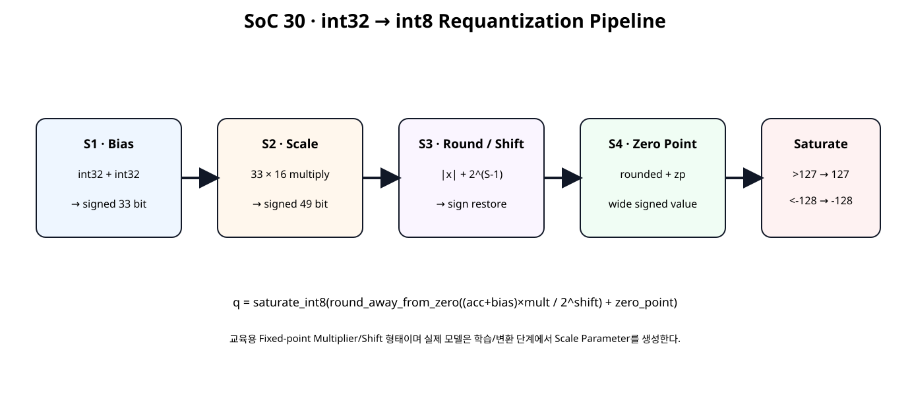
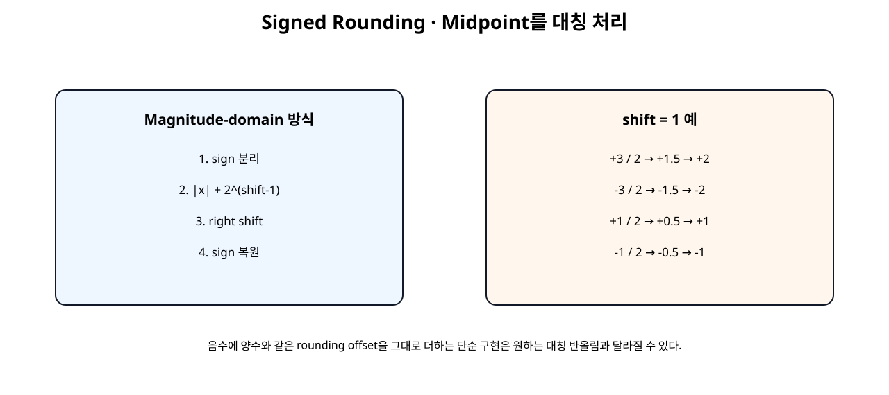
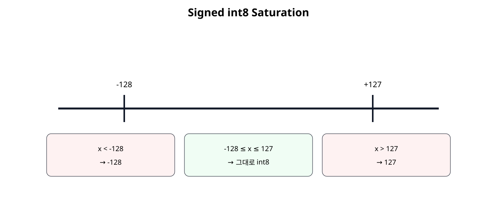
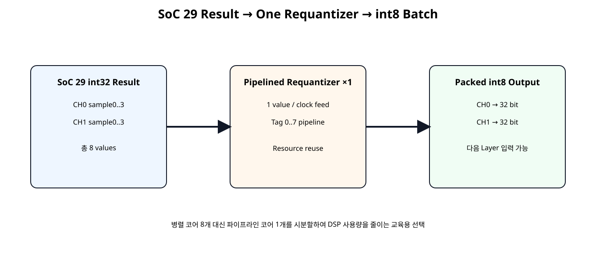

전체 학습 위치
이번 장의 목표

원본 보기 ↗
왜 int32에서 int8로 돌아가는가
int8 Weight와 int8 Activation을 곱해 여러 항을 누적하면 결과 범위가 int8을 크게 넘기 때문에 Accumulator는 보통 더 넓은 정수형을 사용한다. 하지만 다음 Quantized Layer의 입력은 다시 8-bit Tensor가 필요하므로 Output Stage에서 Scale을 바꾸고 8-bit 범위로 Clamp해야 한다.
Requantization 수식
이번 수식은 RTL 학습을 위한 명시적 Fixed-point 형태다. 실제 모델 변환기는 Real Scale을 Integer Multiplier와 Shift로 근사하는 파라미터를 생성한다.
Bias
Bias는 Accumulator Scale과 정렬된 정수값으로 더한다. Bias를 Scale 이후가 아니라 int32 누산 영역에서 먼저 더하는 이유는 모델의 Linear/Convolution Output 식을 정수 영역에서 유지하기 위해서다.
33-bit Bias Sum
두 32-bit 값을 그대로 32-bit로 더하면 최대/최소 경계에서 Overflow할 수 있으므로 Sign Bit를 각각 한 비트 확장한 뒤 더한다.
Fixed-point Scale
실수 Scale을 Hardware에서 직접 Floating-point Multiply하지 않고 multiplier / 2^shift 형태로 근사한다.
49-bit Product
Vivado는 곱셈 연산에서 두 Operand Width의 합으로 Product Width를 추론한다. 실제 DSP48 사용 개수는 Operand 크기와 합성 결과로 확인한다.
Shift
shift=0이면 Scale Product를 그대로 사용하고, shift>0이면 Power-of-two Division을 Right Shift로 구현한다.
Signed Rounding

원본 보기 ↗
Midpoint 예
| 입력 | 실수값 | 정책 결과 |
|---|---|---|
| +3 / 2 | +1.5 | +2 |
| -3 / 2 | -1.5 | -2 |
| +1 / 2 | +0.5 | +1 |
| -1 / 2 | -0.5 | -1 |
Zero Point
Scale 변환이 끝난 정수값에 Output Zero Point를 더할 수 있도록 입력을 제공한다. signed int8 대칭 양자화에서는 zero_point=0을 사용할 수 있지만, RTL 구조는 Offset 적용 단계가 보이도록 파라미터화했다.
Saturation

원본 보기 ↗
Pipeline 구조
AMD는 DSP 기반 Arithmetic Datapath를 충분히 Pipeline하여 내부 Register 자원을 활용하도록 권장한다.
Valid 정렬
valid_i
↓
valid_s1_q
↓
valid_s2_q
↓
valid_s3_q
↓
valid_oData와 Multiplier/Shift/Zero Point 파라미터도 동일한 Stage로 이동한다.
Requantizer RTL
module requantize_s32_to_s8 (
input wire clk,
input wire resetn,
input wire valid_i,
input wire signed [31:0] acc_i,
input wire signed [31:0] bias_i,
input wire signed [15:0] multiplier_i,
input wire [5:0] shift_i,
input wire signed [15:0] zero_point_i,
output reg valid_o,
output reg signed [7:0] q_o,
output reg sat_pos_o,
output reg sat_neg_o
);
// Educational integer-only requantization core.
//
// Formula:
//
// biased = acc + bias
//
// scaled_product = biased * multiplier
//
// rounded = round_away_from_zero(
// scaled_product / 2^shift
// )
//
// shifted = rounded + zero_point
//
// q = saturate_to_int8(shifted)
//
// Notes:
// - acc+bias uses 33 bits to preserve the full signed sum.
// - 33x16 multiply produces a signed 49-bit product.
// - multiplier is normally positive for NN requantization.
// - shift=0 means no right shift and no rounding offset.
// - rounding policy is explicitly symmetric:
// +0.5 -> +1
// -0.5 -> -1
// - saturation range is signed int8: -128..127.
//
// Pipeline:
// S1 : bias add + parameter capture
// S2 : fixed-point multiply
// S3 : symmetric rounding/right shift
// S4 : zero-point add + int8 saturation
// ---------------- Stage 1: bias ----------------
reg signed [32:0] biased_s1_q;
reg signed [15:0] mult_s1_q;
reg [5:0] shift_s1_q;
reg signed [15:0] zp_s1_q;
reg valid_s1_q;
wire signed [32:0] biased_w;
assign biased_w =
$signed({acc_i[31], acc_i}) +
$signed({bias_i[31], bias_i});
always @(posedge clk) begin
if (!resetn) begin
biased_s1_q <= 33'sd0;
mult_s1_q <= 16'sd0;
shift_s1_q <= 6'd0;
zp_s1_q <= 16'sd0;
valid_s1_q <= 1'b0;
end else begin
valid_s1_q <= valid_i;
if (valid_i) begin
biased_s1_q <= biased_w;
mult_s1_q <= multiplier_i;
shift_s1_q <= shift_i;
zp_s1_q <= zero_point_i;
end
end
end
// ---------------- Stage 2: scale multiply ----------------
(* use_dsp = "yes" *)
wire signed [48:0] product_w;
assign product_w =
biased_s1_q *
mult_s1_q;
reg signed [48:0] product_s2_q;
reg [5:0] shift_s2_q;
reg signed [15:0] zp_s2_q;
reg valid_s2_q;
always @(posedge clk) begin
if (!resetn) begin
product_s2_q <= 49'sd0;
shift_s2_q <= 6'd0;
zp_s2_q <= 16'sd0;
valid_s2_q <= 1'b0;
end else begin
valid_s2_q <= valid_s1_q;
if (valid_s1_q) begin
product_s2_q <= product_w;
shift_s2_q <= shift_s1_q;
zp_s2_q <= zp_s1_q;
end
end
end
// ---------------- Stage 3: symmetric rounding ----------------
//
// Magnitude-domain rounding avoids the common bug where adding the
// same positive rounding constant to negative two's-complement values
// rounds midpoint cases toward zero instead of away from zero.
wire product_negative_w;
assign product_negative_w =
product_s2_q[48];
wire [48:0] product_magnitude_w;
assign product_magnitude_w =
product_negative_w
? $unsigned(-product_s2_q)
: $unsigned(product_s2_q);
wire [48:0] rounding_add_w;
assign rounding_add_w =
(shift_s2_q == 6'd0)
? 49'd0
: (49'd1 << (shift_s2_q - 6'd1));
wire [49:0] rounded_magnitude_extended_w;
assign rounded_magnitude_extended_w =
{1'b0, product_magnitude_w} +
{1'b0, rounding_add_w};
wire [49:0] shifted_magnitude_w;
assign shifted_magnitude_w =
rounded_magnitude_extended_w >>
shift_s2_q;
wire signed [50:0] rounded_signed_w;
assign rounded_signed_w =
product_negative_w
? -$signed({1'b0, shifted_magnitude_w})
: $signed({1'b0, shifted_magnitude_w});
reg signed [50:0] rounded_s3_q;
reg signed [15:0] zp_s3_q;
reg valid_s3_q;
always @(posedge clk) begin
if (!resetn) begin
rounded_s3_q <= 51'sd0;
zp_s3_q <= 16'sd0;
valid_s3_q <= 1'b0;
end else begin
valid_s3_q <= valid_s2_q;
if (valid_s2_q) begin
rounded_s3_q <= rounded_signed_w;
zp_s3_q <= zp_s2_q;
end
end
end
// ---------------- Stage 4: zero point + saturation ----------------
wire signed [51:0] shifted_with_zp_w;
assign shifted_with_zp_w =
$signed({rounded_s3_q[50], rounded_s3_q}) +
$signed({
{36{zp_s3_q[15]}},
zp_s3_q
});
wire sat_pos_w;
wire sat_neg_w;
assign sat_pos_w =
(shifted_with_zp_w > 52'sd127);
assign sat_neg_w =
(shifted_with_zp_w < -52'sd128);
wire signed [7:0] saturated_w;
assign saturated_w =
sat_pos_w
? 8'sd127
: sat_neg_w
? -8'sd128
: shifted_with_zp_w[7:0];
always @(posedge clk) begin
if (!resetn) begin
q_o <= 8'sd0;
valid_o <= 1'b0;
sat_pos_o <= 1'b0;
sat_neg_o <= 1'b0;
end else begin
valid_o <= valid_s3_q;
if (valid_s3_q) begin
q_o <= saturated_w;
sat_pos_o <= sat_pos_w;
sat_neg_o <= sat_neg_w;
end else begin
sat_pos_o <= 1'b0;
sat_neg_o <= 1'b0;
end
end
end
endmodule
SoC29 2×4 Batch 입력

원본 보기 ↗
Serial Resource Reuse
Requantizer를 8개 병렬 배치하지 않고 하나의 Pipeline Core를 재사용한다. FEED 중에는 매 Clock 새 값을 넣을 수 있으므로 Resource를 줄이면서 Throughput은 1 value/clock까지 유지할 수 있다.
Tag Pipeline
입력 순서 0~7을 Data와 함께 Pipeline으로 이동해 Output Byte를 원래 CH/Sample 위치에 다시 배치한다.
Batch Wrapper RTL
module requantize_batch2x4_serial (
input wire clk,
input wire resetn,
input wire start_i,
input wire [127:0] acc_ch0_batch_i,
input wire [127:0] acc_ch1_batch_i,
input wire signed [31:0] bias_ch0_i,
input wire signed [31:0] bias_ch1_i,
input wire signed [15:0] mult_ch0_i,
input wire signed [15:0] mult_ch1_i,
input wire [5:0] shift_ch0_i,
input wire [5:0] shift_ch1_i,
input wire signed [15:0] zp_ch0_i,
input wire signed [15:0] zp_ch1_i,
output wire busy_o,
output reg done_o,
output reg result_valid_o,
output reg [31:0] q_ch0_batch_o,
output reg [31:0] q_ch1_batch_o,
output reg [7:0] saturation_count_o
);
// Serializes the 2-channel x 4-sample int32 result block from SoC 29
// through one pipelined requantization core.
//
// Feed order:
// index 0..3 -> CH0 sample 0..3
// index 4..7 -> CH1 sample 0..3
//
// One item is launched per clock while FEED is active.
// The requantizer itself is fully pipelined, so after startup it also
// produces one result per clock.
localparam [1:0] ST_IDLE = 2'd0;
localparam [1:0] ST_FEED = 2'd1;
localparam [1:0] ST_DRAIN = 2'd2;
reg [1:0] state_q;
reg [3:0] feed_index_q;
reg [3:0] output_count_q;
assign busy_o =
(state_q != ST_IDLE);
wire core_valid_i;
assign core_valid_i =
(state_q == ST_FEED);
wire current_is_ch1_w;
wire [1:0] current_sample_w;
assign current_is_ch1_w =
feed_index_q[2];
assign current_sample_w =
feed_index_q[1:0];
reg signed [31:0] selected_acc_w;
always @(*) begin
case (feed_index_q)
4'd0: selected_acc_w = $signed(acc_ch0_batch_i[31:0]);
4'd1: selected_acc_w = $signed(acc_ch0_batch_i[63:32]);
4'd2: selected_acc_w = $signed(acc_ch0_batch_i[95:64]);
4'd3: selected_acc_w = $signed(acc_ch0_batch_i[127:96]);
4'd4: selected_acc_w = $signed(acc_ch1_batch_i[31:0]);
4'd5: selected_acc_w = $signed(acc_ch1_batch_i[63:32]);
4'd6: selected_acc_w = $signed(acc_ch1_batch_i[95:64]);
default:
selected_acc_w = $signed(acc_ch1_batch_i[127:96]);
endcase
end
wire signed [31:0] selected_bias_w;
wire signed [15:0] selected_mult_w;
wire [5:0] selected_shift_w;
wire signed [15:0] selected_zp_w;
assign selected_bias_w =
current_is_ch1_w
? bias_ch1_i
: bias_ch0_i;
assign selected_mult_w =
current_is_ch1_w
? mult_ch1_i
: mult_ch0_i;
assign selected_shift_w =
current_is_ch1_w
? shift_ch1_i
: shift_ch0_i;
assign selected_zp_w =
current_is_ch1_w
? zp_ch1_i
: zp_ch0_i;
wire core_valid_o;
wire signed [7:0] core_q_w;
wire core_sat_pos_w;
wire core_sat_neg_w;
requantize_s32_to_s8 u_requantizer (
.clk(clk),
.resetn(resetn),
.valid_i(core_valid_i),
.acc_i(selected_acc_w),
.bias_i(selected_bias_w),
.multiplier_i(selected_mult_w),
.shift_i(selected_shift_w),
.zero_point_i(selected_zp_w),
.valid_o(core_valid_o),
.q_o(core_q_w),
.sat_pos_o(core_sat_pos_w),
.sat_neg_o(core_sat_neg_w)
);
// Tag pipeline matches the 4 registered stages in requantize_s32_to_s8.
reg [3:0] tag_s1_q;
reg [3:0] tag_s2_q;
reg [3:0] tag_s3_q;
reg [3:0] tag_s4_q;
reg valid_tag_s1_q;
reg valid_tag_s2_q;
reg valid_tag_s3_q;
reg valid_tag_s4_q;
always @(posedge clk) begin
if (!resetn) begin
tag_s1_q <= 4'd0;
tag_s2_q <= 4'd0;
tag_s3_q <= 4'd0;
tag_s4_q <= 4'd0;
valid_tag_s1_q <= 1'b0;
valid_tag_s2_q <= 1'b0;
valid_tag_s3_q <= 1'b0;
valid_tag_s4_q <= 1'b0;
end else begin
valid_tag_s1_q <= core_valid_i;
valid_tag_s2_q <= valid_tag_s1_q;
valid_tag_s3_q <= valid_tag_s2_q;
valid_tag_s4_q <= valid_tag_s3_q;
if (core_valid_i) begin
tag_s1_q <= feed_index_q;
end
if (valid_tag_s1_q) begin
tag_s2_q <= tag_s1_q;
end
if (valid_tag_s2_q) begin
tag_s3_q <= tag_s2_q;
end
if (valid_tag_s3_q) begin
tag_s4_q <= tag_s3_q;
end
end
end
always @(posedge clk) begin
if (!resetn) begin
state_q <= ST_IDLE;
feed_index_q <= 4'd0;
output_count_q <= 4'd0;
done_o <= 1'b0;
result_valid_o <= 1'b0;
q_ch0_batch_o <= 32'h0000_0000;
q_ch1_batch_o <= 32'h0000_0000;
saturation_count_o <= 8'd0;
end else begin
done_o <= 1'b0;
result_valid_o <= 1'b0;
if (core_valid_o) begin
case (tag_s4_q)
4'd0: q_ch0_batch_o[7:0] <= core_q_w;
4'd1: q_ch0_batch_o[15:8] <= core_q_w;
4'd2: q_ch0_batch_o[23:16] <= core_q_w;
4'd3: q_ch0_batch_o[31:24] <= core_q_w;
4'd4: q_ch1_batch_o[7:0] <= core_q_w;
4'd5: q_ch1_batch_o[15:8] <= core_q_w;
4'd6: q_ch1_batch_o[23:16] <= core_q_w;
default:
q_ch1_batch_o[31:24] <= core_q_w;
endcase
if (
core_sat_pos_w ||
core_sat_neg_w
) begin
saturation_count_o <=
saturation_count_o + 8'd1;
end
output_count_q <=
output_count_q + 4'd1;
if (tag_s4_q == 4'd7) begin
done_o <= 1'b1;
result_valid_o <= 1'b1;
state_q <= ST_IDLE;
end
end
case (state_q)
ST_IDLE: begin
if (start_i) begin
feed_index_q <= 4'd0;
output_count_q <= 4'd0;
q_ch0_batch_o <= 32'h0000_0000;
q_ch1_batch_o <= 32'h0000_0000;
saturation_count_o <= 8'd0;
state_q <= ST_FEED;
end
end
ST_FEED: begin
if (feed_index_q == 4'd7) begin
state_q <= ST_DRAIN;
end else begin
feed_index_q <=
feed_index_q + 4'd1;
end
end
ST_DRAIN: begin
// Wait for tag 7 to return from the 4-stage core.
end
default: begin
state_q <= ST_IDLE;
end
endcase
end
end
endmodule
Board Demo CH0
Board Demo CH1
Saturation Count
Batch Wrapper는 sat_pos_o || sat_neg_o 횟수를 세어 이번 Batch에서 몇 개 값이 int8 Range를 벗어났는지 확인할 수 있다. Board Demo 예상값은 2회다.
LED 출력
LED[7:0] → CH1 sample3 = 127 = 0x7F
최종 LED → 0x207F
Python Reference
rounding midpoint checks:
+3 / 2 -> 2
-3 / 2 -> -2
+1 / 2 -> 1
-1 / 2 -> -1
CH0 int32 -> int8 = [8, 16, 24, 32]
CH1 int32 -> int8 = [51, 99, 127, 127]
saturation count = 2
selected LED = 0x207F
formula: saturate_int8(round_away_from_zero((acc+bias)*mult / 2^shift) + zero_point)
SOC30 PYTHON REQUANTIZATION REFERENCE: PASS
Spreadsheet runtime warmup failed during python startup
Traceback (most recent call last):
File "/tmp/tmp.L2TH2Y5coc/artifact_tool_v2-2.8.22/artifact_tool/patches/warm_spreadsheet_runtime_on_startup.py", line 26, in warm_spreadsheet_runtime_on_startup
File "/tmp/tmp.L2TH2Y5coc/artifact_tool_v2-2.8.22/artifact_tool/spreadsheet_warmup.py", line 785, in warm_spreadsheet_runtime
File "/tmp/tmp.L2TH2Y5coc/artifact_tool_v2-2.8.22/artifact_tool/spreadsheet_warmup.py", line 720, in _warm_feature_flows
File "/tmp/tmp.L2TH2Y5coc/artifact_tool_v2-2.8.22/artifact_tool/spreadsheet_warmup.py", line 704, in _warm_collaboration_flows
File "/tmp/tmp.L2TH2Y5coc/artifact_tool_v2-2.8.22/artifact_tool/generated/interface/models.py", line 32317, in hydrate_crdt_from_proto
File "/tmp/tmp.L2TH2Y5coc/artifact_tool_v2-2.8.22/artifact_tool/rpc/remote.py", line 749, in __call__
File "/tmp/tmp.L2TH2Y5coc/artifact_tool_v2-2.8.22/artifact_tool/rpc/client.py", line 150, in call
artifact_tool.rpc.client.RemoteError: hydrateCrdtFromProto requires an empty collaborative document.
Core Self-Checking Test
`timescale 1ns / 1ps
module tb_requantize_s32_to_s8;
logic clk = 1'b0;
logic resetn = 1'b0;
logic valid_i = 1'b0;
logic signed [31:0] acc_i = 32'sd0;
logic signed [31:0] bias_i = 32'sd0;
logic signed [15:0] multiplier_i = 16'sd1;
logic [5:0] shift_i = 6'd0;
logic signed [15:0] zero_point_i = 16'sd0;
wire valid_o;
wire signed [7:0] q_o;
wire sat_pos_o;
wire sat_neg_o;
integer check_count = 0;
integer error_count = 0;
integer wr_ptr = 0;
integer rd_ptr = 0;
reg signed [7:0] expected_q [0:255];
reg expected_sat_pos [0:255];
reg expected_sat_neg [0:255];
always #5 clk = ~clk;
requantize_s32_to_s8 dut (
.clk(clk),
.resetn(resetn),
.valid_i(valid_i),
.acc_i(acc_i),
.bias_i(bias_i),
.multiplier_i(multiplier_i),
.shift_i(shift_i),
.zero_point_i(zero_point_i),
.valid_o(valid_o),
.q_o(q_o),
.sat_pos_o(sat_pos_o),
.sat_neg_o(sat_neg_o)
);
function automatic integer signed ref_requant(
input integer signed acc,
input integer signed bias,
input integer signed mult,
input integer shift,
input integer signed zp
);
reg signed [63:0] biased;
reg signed [63:0] product;
reg signed [63:0] magnitude;
reg signed [63:0] rounded;
reg signed [63:0] shifted;
reg signed [63:0] rounding_add;
begin
biased = acc;
biased = biased + bias;
product = biased * mult;
if (product < 0)
magnitude = -product;
else
magnitude = product;
if (shift == 0) begin
rounded = magnitude;
end else begin
rounding_add = 64'sd1 <<< (shift - 1);
rounded = (magnitude + rounding_add) >>> shift;
end
if (product < 0)
rounded = -rounded;
shifted = rounded + zp;
if (shifted > 127)
ref_requant = 127;
else if (shifted < -128)
ref_requant = -128;
else
ref_requant = shifted;
end
endfunction
function automatic bit ref_sat_pos(
input integer signed acc,
input integer signed bias,
input integer signed mult,
input integer shift,
input integer signed zp
);
reg signed [63:0] biased;
reg signed [63:0] product;
reg signed [63:0] magnitude;
reg signed [63:0] rounded;
reg signed [63:0] shifted;
begin
biased = acc;
biased = biased + bias;
product = biased * mult;
magnitude = (product < 0) ? -product : product;
if (shift == 0)
rounded = magnitude;
else
rounded =
(magnitude + (64'sd1 <<< (shift - 1))) >>> shift;
if (product < 0)
rounded = -rounded;
shifted = rounded + zp;
ref_sat_pos = (shifted > 127);
end
endfunction
function automatic bit ref_sat_neg(
input integer signed acc,
input integer signed bias,
input integer signed mult,
input integer shift,
input integer signed zp
);
reg signed [63:0] biased;
reg signed [63:0] product;
reg signed [63:0] magnitude;
reg signed [63:0] rounded;
reg signed [63:0] shifted;
begin
biased = acc;
biased = biased + bias;
product = biased * mult;
magnitude = (product < 0) ? -product : product;
if (shift == 0)
rounded = magnitude;
else
rounded =
(magnitude + (64'sd1 <<< (shift - 1))) >>> shift;
if (product < 0)
rounded = -rounded;
shifted = rounded + zp;
ref_sat_neg = (shifted < -128);
end
endfunction
task automatic send_case(
input integer signed acc,
input integer signed bias,
input integer signed mult,
input integer shift,
input integer signed zp
);
integer signed q_ref;
begin
q_ref = ref_requant(
acc,
bias,
mult,
shift,
zp
);
expected_q[wr_ptr] =
q_ref[7:0];
expected_sat_pos[wr_ptr] =
ref_sat_pos(acc, bias, mult, shift, zp);
expected_sat_neg[wr_ptr] =
ref_sat_neg(acc, bias, mult, shift, zp);
wr_ptr = wr_ptr + 1;
@(negedge clk);
acc_i = acc;
bias_i = bias;
multiplier_i = mult;
shift_i = shift[5:0];
zero_point_i = zp;
valid_i = 1'b1;
end
endtask
task automatic stop_input;
begin
@(negedge clk);
valid_i = 1'b0;
end
endtask
always @(posedge clk) begin
#1;
if (valid_o) begin
check_count = check_count + 1;
if (q_o !== expected_q[rd_ptr]) begin
error_count = error_count + 1;
$error(
"Q FAIL idx=%0d actual=%0d expected=%0d",
rd_ptr,
q_o,
expected_q[rd_ptr]
);
end
if (sat_pos_o !== expected_sat_pos[rd_ptr]) begin
error_count = error_count + 1;
$error(
"SAT+ FAIL idx=%0d",
rd_ptr
);
end
if (sat_neg_o !== expected_sat_neg[rd_ptr]) begin
error_count = error_count + 1;
$error(
"SAT- FAIL idx=%0d",
rd_ptr
);
end
rd_ptr = rd_ptr + 1;
end
end
initial begin
integer i;
integer signed r_acc;
integer signed r_bias;
integer signed r_mult;
integer r_shift;
integer signed r_zp;
repeat (5) @(posedge clk);
resetn = 1'b1;
// Directed midpoint / sign / saturation cases.
send_case(0, 0, 1, 0, 0);
send_case(3, 0, 1, 1, 0); // +1.5 -> +2
send_case(-3, 0, 1, 1, 0); // -1.5 -> -2
send_case(1, 0, 1, 1, 0); // +0.5 -> +1
send_case(-1, 0, 1, 1, 0); // -0.5 -> -1
send_case(200, 0, 1, 0, 0); // + saturation
send_case(-200, 0, 1, 0, 0); // - saturation
send_case(120, 20, 1, 0, 0);
send_case(-120, -20, 1, 0, 0);
send_case(100, 0, 3, 1, -3);
send_case(-100, 0, 3, 1, 5);
send_case(10, 0, 1, 0, 5);
send_case(-10, 0, 1, 0, 5);
// Bias addition must not overflow at 32-bit boundary.
send_case(32'sh7FFF_FFFF, 32'sh7FFF_FFFF, 1, 25, 0);
send_case(32'sh8000_0000, -32'sh7FFF_FFFF, 1, 25, 0);
// Randomized moderate-range regression.
for (i = 0; i < 80; i = i + 1) begin
r_acc = ($urandom % 4001) - 2000;
r_bias = ($urandom % 401) - 200;
r_mult = ($urandom % 15) + 1;
r_shift = $urandom % 9;
r_zp = ($urandom % 21) - 10;
send_case(
r_acc,
r_bias,
r_mult,
r_shift,
r_zp
);
end
stop_input();
while (rd_ptr < wr_ptr) begin
@(posedge clk);
end
repeat (3) @(posedge clk);
$display("");
$display("SOC30 CORE CASES : %0d", wr_ptr);
$display("SOC30 CORE CHECKS : %0d", check_count);
$display("SOC30 CORE ERRORS : %0d", error_count);
if (error_count == 0) begin
$display("SOC30 REQUANT CORE TEST: PASS");
end else begin
$fatal(
1,
"SOC30 REQUANT CORE TEST: FAIL (%0d errors)",
error_count
);
end
#20;
$finish;
end
endmodule
Midpoint, Positive/Negative Saturation, Bias Boundary와 Random 80 Case를 Reference Function과 비교한다.
Batch Self-Checking Test
`timescale 1ns / 1ps
module tb_requantize_batch2x4_serial;
logic clk = 1'b0;
logic resetn = 1'b0;
logic start_i = 1'b0;
logic [127:0] acc_ch0_batch_i;
logic [127:0] acc_ch1_batch_i;
logic signed [31:0] bias_ch0_i;
logic signed [31:0] bias_ch1_i;
logic signed [15:0] mult_ch0_i;
logic signed [15:0] mult_ch1_i;
logic [5:0] shift_ch0_i;
logic [5:0] shift_ch1_i;
logic signed [15:0] zp_ch0_i;
logic signed [15:0] zp_ch1_i;
wire busy_o;
wire done_o;
wire result_valid_o;
wire [31:0] q_ch0_batch_o;
wire [31:0] q_ch1_batch_o;
wire [7:0] saturation_count_o;
integer error_count = 0;
integer check_count = 0;
always #5 clk = ~clk;
requantize_batch2x4_serial dut (
.clk(clk),
.resetn(resetn),
.start_i(start_i),
.acc_ch0_batch_i(acc_ch0_batch_i),
.acc_ch1_batch_i(acc_ch1_batch_i),
.bias_ch0_i(bias_ch0_i),
.bias_ch1_i(bias_ch1_i),
.mult_ch0_i(mult_ch0_i),
.mult_ch1_i(mult_ch1_i),
.shift_ch0_i(shift_ch0_i),
.shift_ch1_i(shift_ch1_i),
.zp_ch0_i(zp_ch0_i),
.zp_ch1_i(zp_ch1_i),
.busy_o(busy_o),
.done_o(done_o),
.result_valid_o(result_valid_o),
.q_ch0_batch_o(q_ch0_batch_o),
.q_ch1_batch_o(q_ch1_batch_o),
.saturation_count_o(saturation_count_o)
);
task automatic check_true(
input string name,
input bit condition
);
begin
check_count = check_count + 1;
if (!condition) begin
error_count = error_count + 1;
$error("CHECK FAIL: %s", name);
end else begin
$display("CHECK PASS: %s", name);
end
end
endtask
initial begin
integer timeout;
// SoC 29 board-demo int32 output:
// CH0 = [16, 32, 48, 64]
// CH1 = [32, 64, 96, 128]
acc_ch0_batch_i = {
32'sd64,
32'sd48,
32'sd32,
32'sd16
};
acc_ch1_batch_i = {
32'sd128,
32'sd96,
32'sd64,
32'sd32
};
// CH0:
// q = round(x / 2)
// -> [8, 16, 24, 32]
bias_ch0_i = 32'sd0;
mult_ch0_i = 16'sd1;
shift_ch0_i = 6'd1;
zp_ch0_i = 16'sd0;
// CH1:
// q = round((x + 4) * 3 / 2) - 3
// -> [51, 99, 127, 127]
// last two saturate positive.
bias_ch1_i = 32'sd4;
mult_ch1_i = 16'sd3;
shift_ch1_i = 6'd1;
zp_ch1_i = -16'sd3;
repeat (5) @(posedge clk);
resetn = 1'b1;
@(negedge clk);
start_i = 1'b1;
@(negedge clk);
start_i = 1'b0;
timeout = 0;
while (
(result_valid_o !== 1'b1) &&
(timeout < 100)
) begin
@(posedge clk);
#1;
timeout = timeout + 1;
end
check_true(
"result_valid arrived",
result_valid_o === 1'b1
);
check_true(
"done aligned with result",
done_o === 1'b1
);
check_true(
"CH0 packed int8",
q_ch0_batch_o == 32'h2018_1008
);
check_true(
"CH1 packed int8",
q_ch1_batch_o == 32'h7F7F_6333
);
check_true(
"saturation count = 2",
saturation_count_o == 8'd2
);
$display("");
$display("CH0 quantized = 0x%08h", q_ch0_batch_o);
$display("CH1 quantized = 0x%08h", q_ch1_batch_o);
$display("saturation count = %0d", saturation_count_o);
if (error_count == 0) begin
$display("SOC30 BATCH REQUANT TEST: PASS");
end else begin
$fatal(
1,
"SOC30 BATCH REQUANT TEST: FAIL (%0d errors)",
error_count
);
end
#20;
$finish;
end
endmodule
SoC 29 Board Demo 결과를 입력해 Packed CH0 0x20181008, Packed CH1 0x7F7F6333, Saturation Count 2를 확인한다.
Integer-only Inference와의 관계
Integer-only Quantized Inference에서는 int32 Accumulator를 Output Scale로 다시 변환하는 단계가 필요하다. Jacob 등은 8-bit Weight/Activation과 Integer-only Arithmetic으로 Inference를 수행하는 Quantization Scheme을 제시했다.
교육용 Scale 모델
gemmlowp 계열 구현은 Fixed-point Multiplier와 Rounding Shift를 사용하지만 실제 구현은 Q31 Multiplier, Saturating High Multiply 등 더 정교한 형태를 사용한다. 이번 장의 16-bit Multiplier / Power-of-two Shift는 Hardware 원리를 이해하기 위한 단순화 모델이다.
DSP Mapping
Scale Multiply에 (* use_dsp = "yes" *)를 적용했다. 하지만 33×16 Multiply는 7-Series DSP48 하나에 들어간다고 가정하지 않는다. 실제 Primitive Count는 Synthesis Report를 기준으로 한다.
OOC Synthesis
# SoC 30 · Generic requantization core OOC synthesis
set script_dir [file dirname [file normalize [info script]]]
set root_dir [file normalize [file join $script_dir ".."]]
set rtl_dir [file join $root_dir "rtl"]
set out_dir [file normalize [file join $root_dir "reports" "generic_ooc"]]
file mkdir $out_dir
create_project -in_memory -part xc7a35tcpg236-1
read_verilog [file join $rtl_dir "requantize_s32_to_s8.v"]
synth_design \
-mode out_of_context \
-top requantize_s32_to_s8 \
-part xc7a35tcpg236-1
report_utilization \
-hierarchical \
-file [file join $out_dir "01_utilization_ooc.rpt"]
redirect -file [file join $out_dir "02_dsp48_cells_ooc.rpt"] {
set dsp_cells [get_cells -hier -filter {REF_NAME =~ DSP48*}]
puts "DSP48 primitive count: [llength $dsp_cells]"
foreach cell $dsp_cells {
puts "[get_property REF_NAME $cell] $cell"
}
}
report_timing_summary \
-delay_type min_max \
-report_unconstrained \
-max_paths 20 \
-file [file join $out_dir "03_timing_summary_ooc.rpt"]
report_design_analysis \
-max_paths 50 \
-setup \
-logic_level_distribution \
-file [file join $out_dir "04_design_analysis_ooc.rpt"]
puts ""
puts "SoC 30 OOC synthesis complete."
puts "Check actual DSP mapping in 02_dsp48_cells_ooc.rpt."
puts "33x16 multiplication may require more than one DSP48 on 7-series."
Post-route Timing
# SoC 30 · Basys3 board demo implementation
set script_dir [file dirname [file normalize [info script]]]
set root_dir [file normalize [file join $script_dir ".."]]
set rtl_dir [file join $root_dir "rtl"]
set xdc_dir [file join $root_dir "constraints"]
set out_dir [file normalize [file join $root_dir "reports" "board_demo"]]
file mkdir $out_dir
create_project -in_memory -part xc7a35tcpg236-1
read_verilog [file join $rtl_dir "reset_active_high_to_active_low.v"]
read_verilog [file join $rtl_dir "requantize_s32_to_s8.v"]
read_verilog [file join $rtl_dir "requantize_batch2x4_serial.v"]
read_verilog [file join $rtl_dir "soc29_result_demo_source.v"]
read_verilog [file join $rtl_dir "requant_result_sink.v"]
read_verilog [file join $rtl_dir "requantization_basys3_top.v"]
synth_design \
-top requantization_basys3_top \
-part xc7a35tcpg236-1
read_xdc [file join $xdc_dir "basys3_soc30_lab.xdc"]
create_clock \
-name sys_clk \
-period 10.000 \
[get_ports clk]
report_utilization \
-hierarchical \
-file [file join $out_dir "01_utilization_post_synth.rpt"]
redirect -file [file join $out_dir "02_dsp48_cells_post_synth.rpt"] {
set dsp_cells [get_cells -hier -filter {REF_NAME =~ DSP48*}]
puts "DSP48 primitive count: [llength $dsp_cells]"
foreach cell $dsp_cells {
puts "[get_property REF_NAME $cell] $cell"
}
}
opt_design
place_design
phys_opt_design
route_design
report_utilization \
-hierarchical \
-file [file join $out_dir "03_utilization_post_route.rpt"]
report_timing_summary \
-delay_type min_max \
-report_unconstrained \
-max_paths 20 \
-file [file join $out_dir "04_timing_summary_post_route.rpt"]
report_timing \
-delay_type max \
-max_paths 20 \
-nworst 1 \
-sort_by group \
-input_pins \
-file [file join $out_dir "05_worst_setup_paths.rpt"]
set_switching_activity \
-default_static_probability 0.5 \
-default_toggle_rate 12.5
report_power \
-file [file join $out_dir "06_power_normalized_activity.rpt"] \
-rpx [file join $out_dir "06_power_normalized_activity.rpx"]
report_methodology \
-file [file join $out_dir "07_methodology_post_route.rpt"]
write_checkpoint -force \
[file join $out_dir "soc30_board_demo_post_route.dcp"]
puts ""
puts "SoC 30 board implementation complete."
puts "Expected LED[15:0] = 0x207F."
Dynamic Right Shift는 Barrel Shifter Logic을 만들 수 있고 33×16 Multiply도 Resource가 크므로 Post-route WNS/TNS와 Worst Setup Path를 반드시 확인한다.
Power / Resource Trade-off
코어 1개 시분할 방식은 병렬 코어 8개보다 Resource 사용량을 줄일 수 있지만 Batch Completion Latency는 증가한다. 실제 NPU에서는 요구 Throughput에 따라 Requantizer 병렬도를 결정한다.
오류 점검
| 증상 | 원인 | 확인 |
|---|---|---|
| 큰 Bias에서 부호 반전 | 32-bit Bias Sum Overflow | 33-bit sum |
| -1.5가 -1로 나옴 | 음수 반올림 정책 오류 | Magnitude-domain rounding |
| 128이 -128로 Wrap | Saturation 누락 | 127/-128 Clamp |
| CH/Sample 결과 섞임 | Tag Pipeline 불일치 | tag_s1~s4 |
| Scale이 지나치게 큼 | Multiplier/Shift 파라미터 오류 | Offline Quantization 값 확인 |
| DSP 개수 예상과 다름 | 33×16 Mapping | DSP48 Cell Report |
| Timing 악화 | Wide Multiply/Dynamic Shift | Pipeline/Post-route Timing |
SoC 30 완료 체크리스트
- [ ] int32 Accumulator를 다시 int8로 변환해야 하는 이유를 설명한다.
- [ ] acc+bias를 signed 33 bit로 계산한다.
- [ ] 33×16 Product가 signed 49 bit임을 이해한다.
- [ ] multiplier/2^shift 형태의 Fixed-point Scale을 이해한다.
- [ ] Signed Midpoint를 대칭적으로 반올림한다.
- [ ] Zero Point 적용 위치를 이해한다.
- [ ] signed int8 -128~127 Saturation을 구현한다.
- [ ] Valid를 4 Pipeline Stage와 정렬한다.
- [ ] SoC29의 8개 int32 결과를 코어 하나로 시분할한다.
- [ ] Tag Pipeline으로 CH/Sample 위치를 복원한다.
- [ ] Board Demo Saturation 2회를 확인한다.
- [ ] 실제 DSP Count는 Synthesis Report로 확인한다.
공식 매뉴얼 및 연구 근거
| 문서 | 확인 항목 |
|---|---|
| AMD UG901 · Multipliers · 2026.1 | Multiplier Product Width와 추론 |
| AMD UG901 · Multipliers Implementation · 2026.1 | DSP/Slice 구현 선택과 USE_DSP |
| AMD UG949 · Optimal DSP Inference · 2026.1 | DSP Datapath Pipeline 권장 |
| AMD UG949 · Pipelining Considerations · 2026.1 | Latency/Throughput Trade-off |
| Jacob et al. · CVPR 2018 | Integer-only 8-bit Quantized Inference |
| gemmlowp · Output Stages | int32 Quantize-down, Multiplier, Shift, Rounding, Saturating Cast |